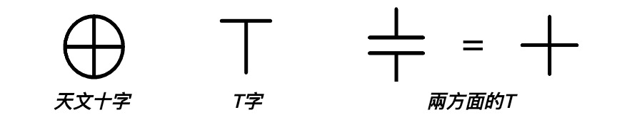
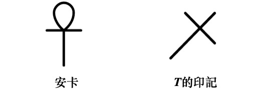
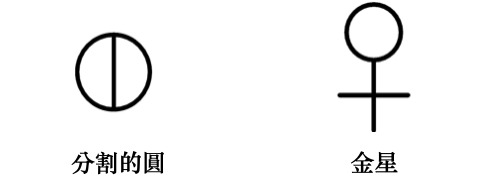
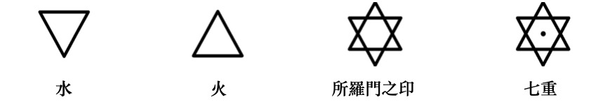
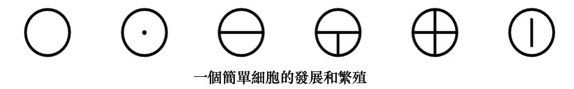

异象七：十字的象征
红宝石
神之爱的辉煌热情
照亮人十字架上闪亮的玫瑰，
倘若人肯聆听内在基督的讯息。
* * *
南方深蓝的高空，
圣星的祝福十字闪烁；
那是智慧与法则的永恒标志——
以三角与方形创造宇宙，圆圈将它环抱。
* * *
伟大圣子脸上，
痛苦的泪珠闪烁，
混著牺牲的殷红血滴，如红宝石落在颤动的大地；
刀枪刺穿祂时，痛苦的叹息自圣洁胸膛发出；
我们心智灼伤，在内里听见祂说：
「我的神，我的神，为何离弃我？」
* * *
抑或后来，心智与祂同欢；
一阵欢腾之中，
祂道出最后的话语：
「哦，祢是我的神，我何等荣耀！」
异象七：十字的象征
信使、马乌与马乌媞在天空中美妙的符号下静立片刻，垂首，眼中含泪。
随后，涅特鲁-赫姆牵起他们的手，微笑辞别井的守护者，朝远处闪著微光的白色大理石建筑走去。
花香弥漫，鲜艳的色彩染活空气；三人徐行于这片荣耀中，陷入沉思。
「孩子们，可愿听一堂关于十字象征的讲课？」信使问道。
「哦，信使，我们当然要听！」两人齐声叫道。
行至建筑前，信使领两位宾客走入其中一栋。
这是座大礼堂，听众坐于大理石席，聆听一位身著白色飘逸长袍的祭司演讲。涅特鲁-赫姆、马乌与马乌媞悄然入座，专心听那祭司续道：
「… 因此，无论我们如何解读十字架上那两句呼求，本质无别：『我的神，我的神，为何离弃我？』或，祭司接道：『我的神，我的神，祢何等荣耀我！』两句皆蕴含极伟大的真理。
「两者皆发生于伟大的启悟之中。耶稣在客西马尼园的苦难、被钉十字架与复活，昭示一种极高的启悟形式，即第四启悟，此时将契合涅槃层面；而此前三次启悟，他逐渐预备并发展菩提意识。
「诸位皆知，第四启悟可谓道途中点；第四与第五启悟之间，尚需七次投生，亦即再经历七次人世。这七次投生若发生，亦将迅速度过，因启悟者已无需于每次转世之间在星光界里歇息。他已成阿罗汉——一位值得、有能力、受敬且圆满之人，进化臻至高境。
「第四启悟总伴随十字架之苦，因启悟者的所有亲友仿佛暂弃他，只得独自悲伤，然这段路途亦是他的荣耀；此时他被置于叛徒之中，每句话遭曲解，每个行为被歪曲；珍爱之物尽失，所爱之人皆离；骂声临身，神圣遭轻蔑拒斥；他对天父之爱的内在信仰甚至动摇，仿佛与一切神圣灵感和慰藉隔绝；历经这一切磨难，若他仍持守信心，转向神，那刻他才真正得著荣耀；天父伸出慈爱之手，扶起受难者，领他脱离盲目绝望之路，转向看见与幸福之途。
这时，十字架的苦楚转为高等心智与灵魂的恩赐，欢腾的合唱响彻所有天界——那启悟者已学会超然于外物与境遇，他胜利地知晓自己与逻各斯本为一体，其余尽是幻影与诱惑。十字架已被征服，光辉的道路笔直铺展，直抵永恒；从一重荣耀通往另一重荣耀。
「基督教义中，前三重启悟由诞生、洗礼与变容象征；古埃及人进行第四启悟时，则将候选者缚于木十字架上，经历死亡、埋葬，坠入冥界，第三日自死中复活。古谚有云：『未经十字架，焉得冠冕。』
「十字记号若用于仪式或个人，便是极强的祝福，能抵御黑暗力量——尤其当此人心中怀有深沉宁静，并诚愿世人同享此福。
若结合对圣父、圣子与圣灵的祈请，这记号的力量更增，其象征亦多层次。

「活跃的逻各斯以等臂长的希腊十字为代表。逻各斯的第二面向——圣子，即受福三位一体的第二位，则由拉丁十字象征；那是柄身较长的基督教十字架，用于一切祝福与驱魔仪式，将祭司意志印记于受施的人与物。巨力流经此标志，从一祭司传至另一祭司；或在敬拜仪式中自高处流向祭司；或对他人划记时流向被划记者。这助人铭记：每唤此名号，邪恶便不得近身，因而成为简短的信仰宣告——当我们依次触碰前额、太阳神经丛、左肩，终至右肩，便想起基督自天父降临尘世，再自尘世降至低等星光界（左手途径），继而升至天父右侧，永驻荣耀。
「常行此记号是好的。人易忘却居于神之理想世界时所受的护佑；它能驱散一切不健康之念与影响，尤其当人易陷于恼怒、自私或其他恶念时。心智恒驻高等层面者或无需此类提醒，但此类人稀，故一般人多可受惠于这简小仪式——这能逐退所有不快，存留一切美善。
「人类与其他无数种类的存有共处；常人虽不可见，它们却力量强大。每当有人作出力量符号、或吐出力量话语，这些存有便聚于行仪者或言语者周身，冀望其发出令它们愉悦的思想与振动。它们需要此类振动；因此，一个人的思想、言语或符号愈崇高，所吸引的元素精灵类别便愈优。你会明白：此理不适用于天使存有，因祂们完美纯洁，无需人类振动的扶助。
「每当人觉察自己暂失与天父之连结，失去完全的爱、宁静、理解与合一，便该画下十字的神圣标记，祈求主再次转身，赐予祂的护佑与指引。诵读福音书时，应画十字三次，使心智、口舌与内心皆立志传播真理，同时开启额头、喉咙与胸膛三处灵性中心，迎接即将倾注的神圣影响。如此，神圣文本将成为力量的核心，由崇敬与感恩的思维气场所环绕，激活心智与灵性官能。若开卷前先画十字，便是开启宝库之门，神圣智慧将自此涌流，注入其存在。它使低等心智与高等心智谐调，从而协助内在大师的工作——大师此时能将智慧之瓶倾予渴求的心智；那心智正寻求与灵魂结合，通往神的领域。
「祈祷或研读神圣文本后，当行最后的十字标记，此举将强化整体努力，并巩固心智与灵魂之间的连结。
「此记号的强大力量，可见于主教的祝圣仪式：祝圣者先在受祝圣的新主教心口画十字，再于其手上画十字，念道：『愿你满得灵性祝福。』于「灵性祝福」一语上又画一记十字。此举全然建立起直觉与情感间的直接通道，一旦直觉成熟发展，便能够立即在物质界显现其意图。
「另有主教佩于胸前的十字架。其上镶嵌七宝石，与祭坛石所嵌宝石相应（如自由天主教派所用）。当祭坛宝石感应到倾泻的力量而闪闪发光时，主教胸前的十字架宝石亦随之闪烁。神圣戒指受祭坛与十字架的珠宝共鸣，交织强化这股力量，向会众乃至整个世界沛然倾注。
「在罗马教会，这胸前十字架常内嵌圣物，或为真十字架的木屑。
「七颗宝石呼应七道光线。人若靠近十字架，与其相应的光线宝石便明灭闪动；倘若全然接纳，必获沛然之力与护佑。
「主教佩此十字架；罗马教会仪式中，他将它悬于短披风之外、无袖法衣之内，因这是他与主的神圣纽带——彷若一枚高度蓄能的电池，胸前十字架化作棱镜，让力量持续流经其身。故此，它在教会仪典中的作用极为强大：作用于主教，自他汲取力量，再将其光线洒向会众。灵视者能见这些辉光，乃基督中三重之灵的显现，惟具相同灵性映现的高度修行者方能感知。
「十字形态各异：有柄的埃及十字（又称T字）、耆那教的卍字、基督教的十字架，皆为生成之象征。公牛在诸般宇宙论中俱属神圣，印度教、琐罗亚斯德教、迦勒底、埃及皆然。同理，蛇乃智慧之征。
「埃及式与基督教式十字，实为三角与方形的结合，亦即展开的立方。三角与方形的象形文字，向被视为男女原则之表征，揭示神性演化的面向，恰如夜空中辉耀的南十字星座，其意涵与埃及有柄十字无异。

「十字蕴含的数字三与四，呈希伯来金烛台之形，立于至圣所内；三四相加得七，正合一周的天数，亦是太阳的七道光。七日一周，是月份年份的起源，故为诞生之时标。人附于十字架上，此象征乃得圆满，与人类起源之念相契；其形体遂等同生命之树。
「十字与圆圈同为普世符号，居于符号序列之首；二者本身涵摄并宣示宏伟的科学真谛。这两种符号与人类历史等长，直指心理与生理奥秘之核心。
「历来有思想家为阐释十字中心之谜，将其象征为宇宙临在。此系谬见；无边界者与无限者岂能受限于一中心？同理，基督显现于十字架，亦不可解作神以耶稣基督之身个体化于该十字中心。
「X形十字与赫尔墨斯十字四臂指向四方，末端弯曲即成卍字，此乃雅利安种族最早象征符号之一。卍字意谓中心不囿于任何个体，无论其何等完美。它更昭示：此原则（即神）存于人内，而人亦在祂之中——万有生命皆然；居于神内，宛若水滴融于沧海；

指向四方的端点在无限中消融自身。末端弯曲亦表轮回循环，人心必须历经此径方能舍弃小我，将心智投射于对无限、天界乃至神的构想之中。
「此十字之谜，蕴藏于赫耳墨斯《翠玉录》二句之中：『分离土与火，提炼精微于粗糙……以绝顶智慧自地升天，再从天降至地。』如是，卍字化为涵纳十字的圆圈，旋即变作埃及天文十字——即圆圈包藏两相勾连的T形，一杆向下，一杆向上。

「土火分离、精粗提炼，意指生命火花与心智脱离凡躯，其后自尘世『升』往『天界』；历经时日，再度降临尘世投身下一轮回。完美的T形，垂直下贯者为男性光线，水平横陈者表女性原则；水平线上添一圆圈，便圆满了伊希斯的三重属性，此即神圣蛋的象形文字。
「所谓基督教十字之源起，远较世人想像古老。《圣经武加大译本》记载，以西结在敬畏主的犹大人额前烙下T字印记。古希伯来人使用的符号呈现如此样貌，在埃及象形文字中，则以常见的基督教十字架形式出现，称为 TAT，象征稳定。这十字现于《启示录》在选民额前印上天父之名，即AO，二者分属灵与物质，是首亦是末（灵居于物质之前）。

「摩西命百姓以血在门柱作记号，以区别将亡的埃及人，用的正是 T 形标志；菲莱一处雕塑遗迹上，可见许多埃及手持十字架，半数属荷鲁斯使死者苏醒的护符。卐字与 T 字随处可寻：复活节岛雕像、古埃及、中亚、前基督时期的斯堪的纳维亚皆有踪迹。
「《民数记》第二十五章第四节记载：『让这些人面向太阳，在主面前钉上十字架。』
「面朝太阳（而非背对）受钉，乃古埃及与印度启悟仪式所用辞汇；开悟者通过秘仪诸般试炼后，将被缚于 T 形卧榻，而非钉死。
「此状态持续三昼夜。据说其灵性自我在此期间『与诸神对话』，降入冥府（或称阿门提、下界，名称因各国而异）；他为彼界无形存有布施行善，肉身则留于 T 形榻上，置于神庙地窖或地下洞穴。在埃及，启悟者安放于大金字塔王室石棺，第三夜将届时抬至入口廊道。指定时刻，初升旭日光芒满映候选人恍惚面容，祭司-启悟者诵出神圣言词将其唤醒，受奥西里斯与智慧之神托特启迪；祭司表面向『太阳-奥西里斯』发言，实则指向内在的『灵—太阳』，从而照亮新生之人。
「宇宙灵魂乃物质性理型在物质界的映象，是一切生命之源，是三界的生命法则。此即赫尔墨斯哲学家与古代圣贤所称『七重性』，描绘为七重十字，其分支代表示光、热、电、地磁、星光界辐射、运动及智性，亦即自我意识。
「基督教采用十字符号之前，它早用作区分开悟者与入门者的标志，后者称为『克雷斯托斯』。
「卡巴拉所用十字象征元素对立与四元平衡。
「启悟者或祭司画十字时，手覆额头念：『你属于』，移至胸前续道：『那国度』，触左肩：『正义』，再右肩：『与慈悲』；最后双手交合说：『永世无尽。』另一版本流传于入门者与大众之间，不知前述之法。
「将求道者置于十字的启悟仪式，亦为南美早期种族所知。山崖雕刻的一系列图像中，人形自十字跃出，或情形反过来；因而人可视为十字，十字亦可视作人。
「另有一种启悟形式：异象中现巨大金十字，缓缓转动，显出黑色元素精灵的直立身形，如人张臂。它向启悟者鞠躬，静待指令。此为考验：启悟者若命精灵效劳服从，立陷险境；若静默不语，形体便消散，危险随之渡过。
「圆中十字亦称世俗十字，标志人类与动物生命起源。圆圈取走仅余十字，意味人已彻底堕入物质。圆中十字象征纯粹泛神论，与圆内 T 字、耆那十字或卐字同义。T（Tau）是字母 T 最古老形态，乃第三根种族象征性堕落前的字符；此时自然演化致两性分离，图形遂成为剖开的圆（圆指无性生命），圆受修改或割裂。其后于第五根种族变为埃及生命符号安卡，再后来又成金星标志。

「在西方卡巴拉中，圈内十字被称作『玫瑰与十字』的结合，象征宇宙显现之前，蕴藏神秘生成的伟大奥秘。
「普遍解释认为，十字架上的玫瑰代表人的灵魂（实为心智）寓于肉身。如我所言，玫瑰即指心智，它钉上十字架（进入人体），是为了在其中生长茁壮，并凭借进化之路上积累的经验与智慧，最终配得与神圣灵魂合一。
『愿玫瑰在你十字架上盛开』是一句古老的问候，也是亲切的祝愿、兄弟般的祝福。
「有柄的埃及十字象征『男－女』与『伊西斯－奥西里斯』，乃一切形体的生成原则，基于原初显化，这适用于所有指向与意涵。卡巴拉教义中，『生命之树』是有柄十字的有性面向。『Otz』一词意为「树」，在希伯来语中由两个字母构成，数值分别为七与九，代表神圣女性数字七与男性能量数字九。
「对埃及人而言，数字七也是永恒生命的象征；希腊字母 Z 形如两个七，Ｚ 既是「我活著」（Zaô）的首字母，也是「众生之父」宙斯（Zeus）的起首。
「有柄十字另含『誓言』、『盟约』之意，T 字顶端的圆圈相当于象形文字 Ru 转正。此象形符号意指「门」、「出口」、「口」，此处指天空北区的诞生地，太阳由此重生。因此，有柄十字的圆圈以女性象征标志了北方出生地。正是在天空此域，「轮转之母」七星女神在一年最初的循环中诞生了时间。

「有柄十字或称安卡十字，其最初形状为安卡结，此绳套包含括圆圈与十字。它代表大熊座在北方天空划出的圆圈，这构成了最早时间中「一年」之基准。安卡十字的圆圈后来演变为塞普勒斯的 R（横线上方的半圆）与科普特的 Ro（P）；后者又衍生出希腊的 Chi-Rho（带交叉杠的大写 P）。
「安卡结亦名绳索，可见于四臂印度湿婆神的右后手臂；Ru 符号也被视作大瑜伽士的第三只眼，其姿态如印度苦行僧。
「T 字是神秘神圣智慧的Ａ与O，体现于托特（或赫尔默斯）的首尾字母；托特乃埃及字母的创制者。T 字也是犹太人与撒玛利亚人字母表的最末字母，他们称此字母为「终结」，或「圆满」、「极点」与「安稳」。
「立方体展开后，其六面形成十字；直立部分含四个正方形，横杠含三个，总计七个。

四象征处於潜态的宇宙，即混沌物质，需经灵渗透方能活化。换言之，三角形须放弃其一维本性，散布于物质之中，从而于三维空间筑起显化根基，使宇宙得以智性显现；立方体的展开实现此点，故有柄十字象征人、生成与生命。在埃及，安卡一词意谓「灵魂」、「生命」与「血」；或指有灵、活跃之人——七重之人。
「再次回到卐字形式的十字：少有符号比此图形更具真切的神秘意涵。它由数字六象征，如同此数，指向天顶与底极、东南西北各方。此单元无所不在，映现于每一单元之中。它标志「诸轮」的持续进化，亦是四元素这神圣四者在神秘与宇宙意义上的象征；其四臂与毕达哥拉斯与赫尔墨斯的比例相关。受训的启悟者能以数学精度追溯宇宙的演化、捕捉可见与不可见者之间的连结，并推演人类与物种的初生。此为一切符号中最富哲学科学性、亦最易领悟者。它总括创造与进化的全部工程，涵盖范畴自宇宙神谱至人类演化，从未知之神至电子——而后者之起源对科学而言，犹如那「一切-神」本身般未知。然古代圣者知晓此秘；卐字见于各古老民族的宗教符号，即为明证。
「卐字在《迦勒底数字书》中被称为「工人的锤子」；《隐藏奥秘之书》也称其为「锤子」。这锤子自燧石（或空间）击出火花，诸火花便化为诸界。
它亦是雷神之锤，由矮人锻造的魔法武器，用以抗衡巨人（或宇宙前的原初巨力）。
「它同时是炼金术、宇宙起源论、人类学与魔法的符号；其意涵须以七把钥匙方能解开。
「若将它对应于微观宇宙（即人），它标示人是天界与尘世的连结：右手指天，左手指地。此符号是科学周期、神圣周期与人类周期的枢纽；彻底领悟其义者，将从大幻象的苦海中解脱，其下透出的光辉，足以照破一切人为的阴谋与虚构的黑暗。
「对研习东方秘传或外传教义者而言，它意味著『一万种真理』；这些真理隶属于未见宇宙、原初宇宙论与神谱的奥秘。
「在西藏与蒙古，它见于佛图与佛像心口，也总置于已故神秘主义者胸前，如同古埃及的带柄十字。
「卐字有两类，设计与方位各有变化。我们所探讨者，其上臂指向右方，见于图示。一切正道仪式魔法、仪轨或原则皆用此形。
「若其反转，上臂朝左、下臂朝右，便成邪恶符号。凡异于正道类型的卐字，皆与黑暗及凶险相系，将为佩戴者或使用者招致灾祸。
「正如你所知，一切法则皆有两面：善与恶、正与反；符号如此，万事万物亦如此。
「完美形态的卐字，为右道的神秘主义者所用；这是烙在活生生启悟者心上的印记，有些人更将其永刻肤上，作为象征与警示：当他们习得一万种圆满秘密，绝不可泄露于不配之人。
「基督教十字的七重，等同潘的七管笛，象征自然的七种力量；亦对应七颗行星、七道映为光谱颜色的光线、七个音符。犹太人的金色殿烛台，一侧三座、一侧四座，合为七——那是代表生成的阴性数字；《创世记》中，六日劳作以第七日为冠冕，亦成循环计算的根基。
「圆、十字与七，是最古老的原始符号。毕达哥拉斯及其门徒视数字七为三与四的结合，并以双重方式诠释。在他们看来，三角形是已显现之神的最初概念，是其形象：「父—母—子」；正方形则是完美之数，为物质层面一切数字与事物的理型根源。然正方形属次级完美，因其关乎物质世界；三角形对应希腊字母Δ，乃未知之神的载体。此点甚至见于神名——宙斯的拼写：维奥蒂亚人作Δευς，即拉丁语的「神」（Deus）。这便是数字七在形上概念中，与现象世界之「七」的关联；但为了世俗或外传的解释，其象征被更动了：三角形或数字三，成为三种物质元素——气、水、土——的象征；正方形或数字四，则成为一切无形无相之物的本源。
「然而毕达哥拉斯学派又将七视为六与一，是六元组与单元的复合体；于是数字七成了不可见的中心，成为万物的灵——凡六边形之物，皆以中心为其第七属性。数字七象征十字，十字亦象征数字七，因而具备单元的一切完美，堪称众数之数。正如绝对的统一性未经创造、不可分割，故其不属数字，亦无数字能生之；七亦然：十以内的任何数字皆无法产生或构成它。

「顶点朝下的三角形，是湿的原则与水的象征，而水为最初的元素，火潜藏其中；宇宙的第一颗种子，便投进了水或曰混沌。顶点朝上的三角形，则是火的象征。两符交错，便产生所谓的所罗门之印（此名实为误称），此符衍生一切十数。其中心有一点，乃七重标记，此即人、即十字。两个三角，揭示二元或「二」；其三角形象征数字三；两主三角形共一中心点，化为四元或四；五元生于三角相叠，辅以三边，是为五；六点连缀成六元，即数字六；而此图腾整体为七重：中心一点，故曰七元，是为七；此终极之数，涵盖诸数。
「立方体展为十字，可见竖杆——阳性之征——裂为四截；四是阴性之数，而十字横杆（物质之线）则化为三份。此说似有矛盾，然因立方展开时，中面为竖横所共，遂成中立，不属任何一方（虽两者共享）。是故，阳或灵之直杆仍为三元，而物质之杆则属二元，为偶数，故属阴性。中心点乃阴阳交会、灵与物质相融之处：象征创造。数字三与数字四共构十字，令两者和鸣，显现自然之创生力；其中心点即崇高之爱。当爱经服务、牺牲与奉献净化，至高境界便等同神之爱。彼时它如神圣玫瑰于中心盛放，香气升达天界，其圣洁、仁爱与奉献之芬芳，纯粹无瑕。
「整个自然将为之欢欣，其悠扬声响与七行星之乐音共鸣；各星循轨摇曳，以洪亮凯歌交融他者之音，织就和谐。
「然则，纵使研究诸符号：自圆至十字，自Ｔ字至三角与正方，并借此学会指著进化之路的符号，我们仅能见其果，而伟大第一因依旧隐匿；此乃更甚以往之奥秘。
「或可学知：种子萌为众生的系谱树，名曰宇宙，是三而一，乃种子之三重面貌：其形、色与质；然引导其生长之力，永不可知。
「此生命力究竟为何？何以令种子萌芽、迸发嫩芽，再成干枝；而后枝条低垂，吐露自身之种，复又生根萌发，衍生他树？然对欲探此显化力量奥秘的求道者，有一答案——此力亦潜藏其内。
「你当知晓，一切物质现象，不过感官幻影，再由想像助长。在物质层面，无物可谓坚实，因此层面的万物皆能藉某种『光线』（姑且称之）显为透明。
「灵视者无需此光，即可穿透物质帷幔。当他们开启灵视之『光』，万物皆融消；他们所感是真实，而非幻象与想像之境。看似坚实的墙垣，顿如玻璃；树木、花草、走兽乃至诸般物质，尽皆消逝，恍若从未存有；是的，它们本未存有！
「我将略作演示，当你们跟著做时，请谨记方才所言。此小实验中，我将展示物质生命与众生如何初生。在此之前，容我补充：你们，与尘世众生，若愿意且足够专注，皆可行此实验。
「首先，你需领受此事实：物质层面的一切皆有生命；无所谓死物。凡可触、可见、可感之物，皆有生命，即物质性生命。若无生命，你便无法触见感知其存。『死』去的兽躯有生命，『死』去的树干有生命，一石、一砾、一沙、一雪、一雨，皆有生命。金属、矿物、化学品乃至一切物类，皆然。它们活著、颤动、脉搏，与生命共振！
「此生命或物质性质有四元：氢、氮、氧、碳；而它们自身亦有生命！
「碳乃一切有机质之基；氧助燃烧，为所有有机生命之活化剂；氢于氧中燃尽后，成最稳化合物，遍存众生体中；氮乃惰气，为动物呼吸时与氧混合之载体；它渗入一切有机质。当四元于有机质中相合，只须添入生命火花、活性之火点燃机体，便能生长繁衍。
「我将以想像一个单细胞向你展示此事；只要你恒心尝试，你亦能为之。」
言毕，讲者静立，凝神专注；片刻，一颗胶质小球浮于其前空中，剔透微泛磷光。
「此即最初之元。」他说道。
「其象征是圆，无限的圆，亦即「无数字」与「零」；它象征黑暗，象征未显化。唯当另一个数字列在它之前，它才活转过来，成为一个活跃的数字。此乃胚种——若要赋予它生命，必须让光的光线（神之意念）照入；胚种随即因火花而焕发，其符号也变为带点的圆。正如我们能凭意念力构想出这胚种，我们亦可将生命的神之意念投射其中。
他召来一位听众上前。

「现在，请你凝神于此胚芽，」他说，「并从你内在，向它投射一丝生命的精质。」弟子依言而行。很快，一缕微光浮现，小球开始缓缓回旋。
「眼前演示，恰似动物体内旋转的灵性中心运作方式。」讲师道，「为向诸位展示这些胚种如何进化繁衍，我将加速此过程。请细看。」
片刻，一线细光将细胞剖为两半；每一半都保留了内在的发光元素，两者仍相连，继续缓缓旋转。接著，它们徐徐分离，各自绕轴自转，亦互相绕行；待慢慢充盈成形，皆成完满小球，至此已有两颗；形体完美如一，无从区别。这过程重复数次，终生成许多闪烁著生命的「胚种-细胞」，如微缩宇宙般环绕运行。
「此处所见景象，正是灵界中回旋的原子。它们由神之意念所生，这增殖的过程将永续不息。欲将这些造物带入物质世界，下一步是添上一条垂直线，将圆的横向分界连至下半圆周；换言之，圆内呈现的已非横线，而是一个T字。此符号一现，即意味灵性事物依其进化路径，即将落入物质生成，或曰坠入物质界；下半的垂直线代表男性，与上半的女性相连——两性共寓一身。
「随后，进入下一阶段：圆内出现完整的十字。
「正如动物与人体灵性中心的情形，其旋转将不断加速，光芒愈盛，终使这些小球化为燃烧的能量球，疾速回旋，每一细胞皆蕴含一个宇宙。物质世界的电子于焉成形，它们的组合逐渐发展为植物、动物之躯，最终成就人身；一切皆依循这些电子的演化路径。全过程，可总结于一个圆圈符号，内含数字1。
「这代表十个天界果实，源于男、女两种子，初时肉眼不可见；因其在进入具象的物质身体前，全然属灵。这象形文字，象征最初的神圣显化，包含精确比例的力量。首个圆是空无，而那垂直线则是太初，是原初一；它是逻各斯的话语，其他数字自此涌流，直至数字9，达至扩张的极限。
「当人身在肉体中，与灵性结合而趋于完整，我们便发现以下原则。人身的四项基本物质原则是：
- 动物欲望的原则，与动物存在不可分离；称为「欲体」。
- 生命的载体：这是种惰性载体，身体解体后不久即消散；此即星光体。
- 催生一切生命现象的活跃力量；此即生命或生命能量。
- 身体本身的粗重物质。
「与此四项人身原则相结合的，是神性的三重显现：
- 未显的逻各斯，自神圣宇宙领域映照于人类灵性界，作为宇宙之灵或神圣灵魂，全然觉知其个体性，并与每个人相联。
- 普遍宇宙的生命原则，而人类的心智仅是其微小部分；它拥有完整的个体性、以及对本体的意识；它是人类神圣灵的一部分，为进化之故而投身世间，直至有资格与其更好的另一半——灵魂——结合。
- 宇宙的活跃智性，映照于人类智性之中；心智凭此超越动物，逐步进化。
「此为人的七重原则；前四者属物质性，构成一个方形，后三者属灵性，以三角形代表；此即七重之人。」
演说至此结束。涅特鲁-赫姆、马乌、马乌媞等人向讲者致谢后，随众听众离开了神庙。步至外头，但见漫天云霞辉煌灿金；望向地平，色彩渐次沉入深紫与淡紫，间有亮眼的洋红与荧光的暗紫；天穹中镶著片片闪亮的湛蓝，宛如粼粼湖湾，两侧庞然的雾气团高悬，流转著璀璨光泽，气象宏阔。
「孩子们，方才的演说，可还喜欢？」信使问道。
「这给了我们很多可堪玩味的念想。」马乌答道，「但我原以为，听讲的灵魂早该知晓这一切。他们不是在尘世历经了千百万年的转生？他们不是得通晓万事，才有资格踏入这神圣领域？」
信使浅浅一笑：「孩子，知识在人间备受尊崇，却非通往天界的通行证。那空泛美貌背后的丑陋、崇高抱负底下的肤浅、王座之上的卑微、巨富之中的贫瘠、自诩正义背后的罪孽——也都行不通。」
「相较于天界智慧，尘世的才智不过是愚昧的无知。」
「要进入这些界域（即便尚未抵达天界，仅是外缘），『灵魂-心智』尚需具备另一些品性：朴素中透出的智慧；爱里蕴藏的美；谦卑所成就的崇高；因无偿奉献而丰盈的财富；以及一份纯洁的信赖——信那全父全母所予的慈爱与护佑。
「那在山坡上牧羊的、在田地里耕作的、在深海中航行的——他们比起那些积攒不义之财而自矜的富人、比起高踞王座以铁腕威吓臣民的权贵、比起只信物质证据而讥嘲一切神与灵的学究，都更接近神。后者永不能踏入此地，尽管他们或许能向你阐释世间万事，且自以为无所不知。」
马乌追问：「但灵魂在获准进入之前，总该先懂得演讲者所用的符号、及其所象征的神圣智慧吧？若未学会使用这些符号，是否便因太过无知，而无从领会自己在此界域中的地位？」
「孩子，符号可有千般诠释；唯有臻至智慧之境者，方能得当地运用它们。符号背后藏著浩大的奥秘，但唯有开悟的灵魂能彻悟其义。古时曾有智者拥有这般智慧。他们历世轮回，一心砥砺心智，终能窥见符号的真义。他们有明师指引，此师能甄选与培育合适的弟子。许多人曾想进入古老的神秘学校，但获录取者寥寥；能踏入高等秘仪核心者，更是凤毛麟角。」
「如今这般开悟者已近乎绝迹；较之此世过往的任一时期，现下愈发稀少。因此，你方才所见的学院便建于此地，让已得净化之人得以习得尘世难觅的智慧。」
「当一个人修行足够、内在绽放纯净之光，他便能步入星光界火焰之境，沐浴永恒的白昼，聆听讲论；诸天使将为他祝祷。
「当神圣之爱的花在心中绽蕊，而我执不存，他便可踏入此间；慈爱的上师将拥他入怀，以神之印记为他膏沐：一朵深红玫瑰自他胸前升起。
「当他珍爱同胞、无求回报地服务，他便可踏入此间，与曾为他人奉献者并肩而坐；他们将亲吻他的额头，尊他为高贵的王子。
「孩子，这便是来此的必备品格；凡具足这些美德者，无一会遭拒，因为他们已与神谐鸣，美德的果实便是深沉的宁静。」
「如此说来，修得自身高贵者皆有希望。」马乌说道，「在这片乐土获取居留资格，竟是这般简单。」
「那么其他神庙又教些什么呢？」马乌问道。
「教导每一个已净化的『灵魂-心智』必须研习的课业，以跻身更高界域。」涅特鲁-赫姆回答，「孩子们，还想再听些讲习么？」
「哦，请务必。」他们喊道；神圣的信使便领他们走向下一座建筑，那儿有更深的启示等候著。